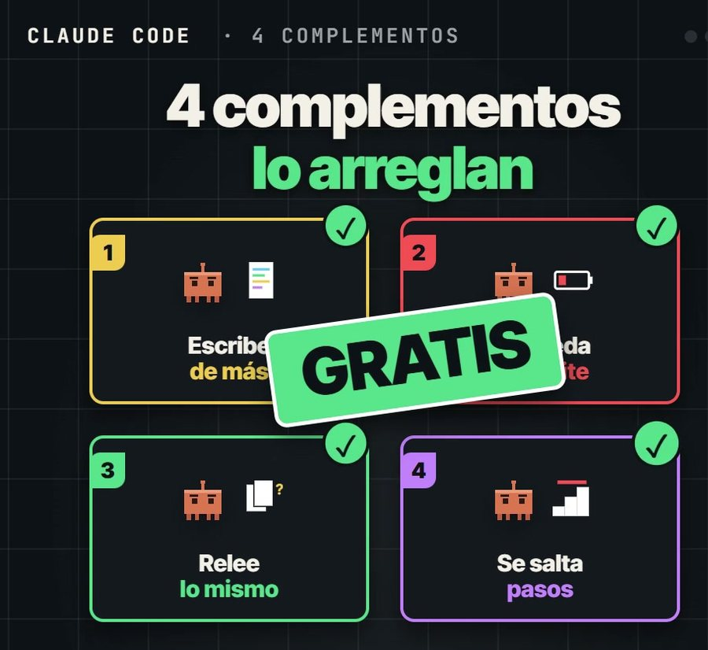
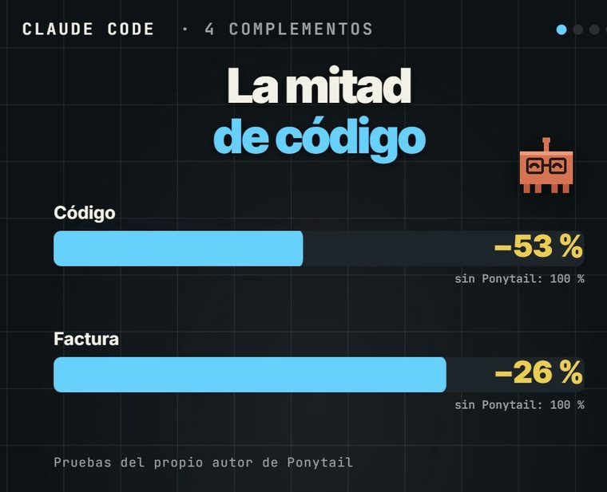
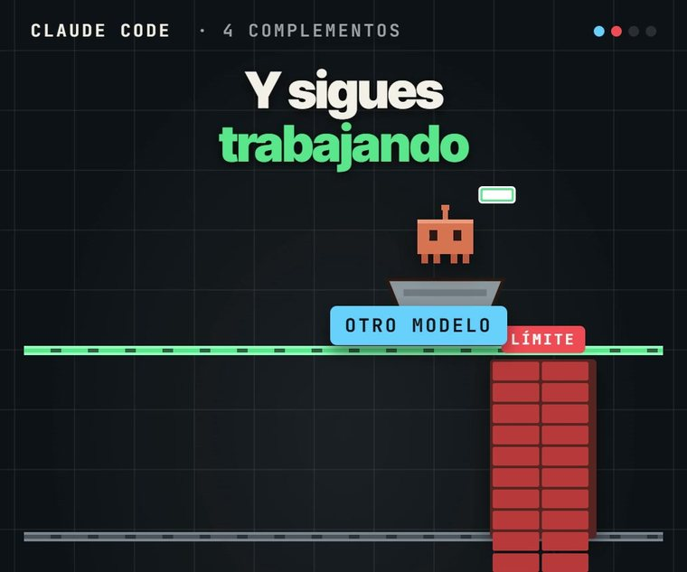
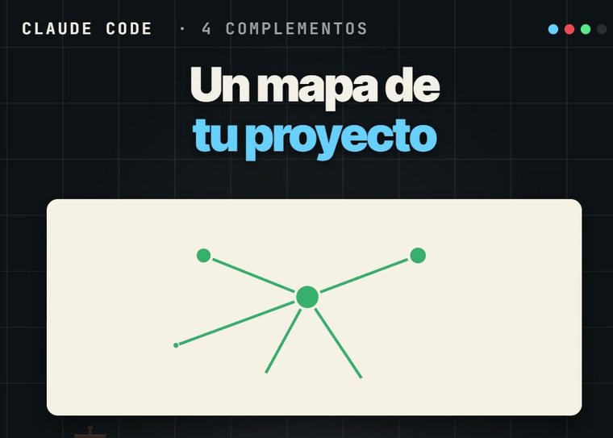
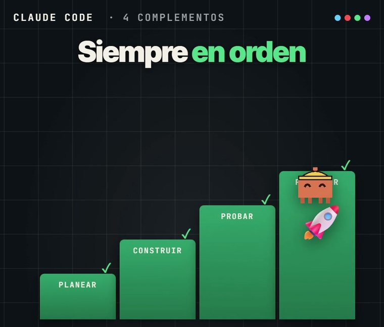

GRATIS · EN ESPAÑOL
GRATIS · EN ESPAÑOL
Las 4 manías de Claude Code y los 4 complementos gratis que las arreglan
Escribe de más, se queda sin límite, relee lo mismo cada vez y se salta pasos. Esas 4 manías las pagas tú. Esta es mi biblioteca de recursos: los 4 complementos con su instalación y, al final, los demás regalos que uso para automatizar y vender más.

Los 4 son gratis y de código abierto.
🚀 Los agentes de IA con los que hago cosas como esta les están sumando entre 5.000 y 10.000 dólares al mes a los clientes con los que trabajo. Están dentro de Imperio, para multiplicar las ventas de los negocios.Al final te cuento cómo funciona ↓- 💻 Se hace desde el computador (Windows o Mac), no desde el celular.
- ⏱️ Ponytail y Agent Skills se instalan en 2 minutos. Graphify y OmniRoute, en unos 10.
Ten tu cuenta de Claude con plan Pro
Claude Code viene con el plan Pro (unos 20 dólares al mes). El plan gratis no lo incluye. Si ya pagas Pro o Max, salta al paso 2.
Ver planes de Claude →Instala Claude Code
Escribe terminal en el buscador de tu computador y ábrela. Pega el comando de tu sistema y dale Enter. No muestra avance mientras descarga: espera a que termine.
WINDOWSirm https://claude.ai/install.ps1 | iex
curl -fsSL https://claude.ai/install.sh | bash
Cuando termine, cierra la terminal y vuelve a abrirla. Los comandos son los de la página oficial de instalación. ¿Prefieres sin terminal? La app de Claude para el computador trae Claude Code en la pestaña Code.
Escribe claude e inicia sesión
Crea una carpeta en Documentos llamada mi-proyecto (o usa la carpeta de tu proyecto). Luego, en la terminal:
cd Documentos\mi-proyecto claude
cd ~/Documents/mi-proyecto claude
La primera vez te abre el navegador para entrar con tu cuenta de Claude. Entras, vuelves a la terminal y ya está Claude Code esperando tu mensaje. Si te pide permiso para crear archivos o instalar algo, acéptalo: así trabaja.
Los 4 complementos
Los que dicen “pega estas líneas” van dentro de Claude Code, una por una, con Enter. Cuando termines de instalar, escribe /exit y vuelve a abrir claude.
Ponytail
Manía 1 · escribe de másConvierte a Claude en el senior más vago de la oficina: antes de escribir revisa si ya existe algo que sirva, y solo escribe lo que hace falta. En las pruebas de su autor: 53 % menos código y 26 % menos costo.

Pega estas líneas en Claude Code:
/plugin marketplace add DietrichGebert/ponytail /plugin install ponytail@ponytail
Queda activo siempre. Si algún día lo quieres apagar: /ponytail off. Repositorio: DietrichGebert/ponytail.
OmniRoute
Manía 2 · se queda sin límiteCuando se te acaba el límite, sigues trabajando con otro modelo usando tus propias cuentas gratis de más de 150 proveedores. Sumando esos planes gratis salen unos 1.600 millones de tokens al mes, según sus creadores.

Pega este mensaje en Claude Code:
Instálame OmniRoute (https://github.com/cheaper-inference/OmniRoute) siguiendo su Quick Start. Si no tengo Node.js 22 o más nuevo, instálalo primero. Al terminar, arráncalo y dime qué dirección abro en el navegador.
En su panel (localhost:20128) entra a Providers y conecta las cuentas gratis que quieras. Cuando se te acabe el límite, deja OmniRoute abierto (escribe omniroute en una terminal) y en otra terminal abre Claude Code así:
omniroute launch
Los modelos gratis no son Claude: úsalos para no frenar y deja lo delicado para Claude. Repositorio: cheaper-inference/OmniRoute.
Graphify
Manía 3 · relee lo mismoClaude tiene memoria de pez: cada vez que empieza, vuelve a leer tus archivos. Graphify le dibuja un mapa de tu proyecto para que lo consulte en vez de releer todo. El mapa del código se arma en tu computador sin gastar tokens.

Pega este mensaje en Claude Code:
Instálame Graphify (https://github.com/Graphify-Labs/graphify): si no tengo uv, instálalo; luego corre "uv tool install graphifyy" y "graphify install".
Para usarlo, vuelve a abrir Claude Code en tu proyecto y escribe:
/graphify .
Repositorio: Graphify-Labs/graphify.
Agent Skills
Manía 4 · se salta pasos25 habilidades de Addy Osmani que obligan a Claude a ir en orden: definir, planear, construir, probar, revisar y publicar.

Pega estas líneas en Claude Code:
/plugin marketplace add addyosmani/agent-skills /plugin install agent-skills@addy-agent-skills
Para usarlo: /spec define qué vas a construir, /plan lo parte en tareas, /build construye, /test prueba y /ship publica. Repositorio: addyosmani/agent-skills.
Más regalos de mi biblioteca
Preguntas frecuentes
¿Cuánto me cuestan?
Los 4 son gratis y de código abierto. Solo pagas Claude Pro, unos 20 dólares al mes.
¿Por cuál empiezo?
Por Ponytail y Agent Skills: 2 minutos cada uno. Graphify cuando tu proyecto ya tenga muchos archivos. OmniRoute solo si te quedas sin límite seguido.
¿Te sale “Permission denied (publickey)” al instalar un plugin?
Usa el link completo del repositorio. Por ejemplo: /plugin marketplace add https://github.com/addyosmani/agent-skills.git y después el /plugin install normal.
Deja de hacerlo todo a mano
Haz en 3 días el trabajo de todo un mes.
Ten un equipo de marketing de 4 personas trabajando para ti por unos $25 al mes: los agentes Imperio. Te hacen:
- ✍️ El contenido y los carruseles.
- 📣 Los anuncios y los VSL.
- 🖥️ Las páginas web.
- 📊 Las campañas en Meta.
- 💬 Y hasta responden tus mensajes.
Sin saber de tecnología: solo copias, pegas y facturas.
Son los mismos agentes que hoy les suman entre $5.000 y $10.000 dólares extra al mes a los negocios con los que trabajo, para multiplicar sus ventas.
Escríbeme “IMPERIO” por Instagram →Te cuento cómo funciona y si encaja con tu negocio.